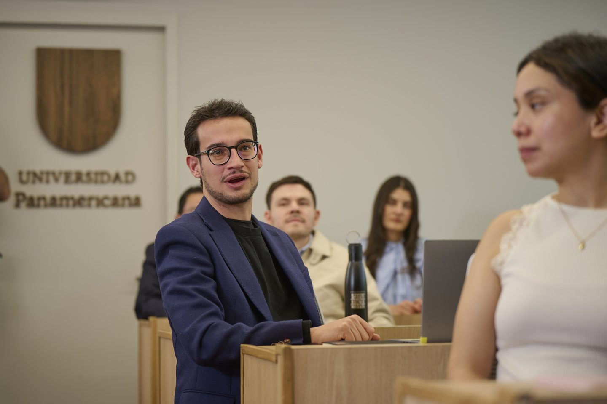

Maestría · Campus CDMX — sede Santa Fe
Maestría en Economía Digital
Lidera la economía del mañana, hoy.
Comprende los mercados digitales, diseña estrategias con datos y toma decisiones con criterio ético en un entorno que la tecnología redefine todos los días. Todo esto, con el acompañamiento cercano que distingue a la Universidad Panamericana.

- Modalidad
- Presencial
- Duración
- 4 semestres (2 años)
- Campus
- CDMX — Santa Fe
- Próximo inicio
- Agosto 2027
- RVOE
- 20262339
- Idioma
- Español
Resumen
Lo esencial del programa
- Duración4 semestres / 2 años
- ModalidadPresencial
- Días y horariosViernes 16:00–22:00 y sábado 8:00–14:00 h PENDIENTE
- CampusCDMX — sede Santa Fe
- Próximo inicioAgosto 2027
- RVOE y validezRVOE 20262339 (26/05/2026)
El programa
¿Qué es la Maestría en Economía Digital?
La Maestría en Economía Digital es un posgrado de la Universidad Panamericana para profesionales que quieren entender —y liderar, con sentido humano— la transformación digital desde una mirada económica rigurosa. A lo largo de cuatro semestres combinarás microeconomía avanzada, teoría de juegos, econometría y ciencia de datos con temas de vanguardia como la economía de plataformas, blockchain, la inteligencia artificial como factor productivo y el diseño de mercados. Al terminar, tendrás las herramientas conceptuales y técnicas para analizar mercados digitales, diseñar estrategias basadas en datos y tomar decisiones informadas en un entorno donde la tecnología redefine constantemente las reglas del juego.
Analiza cómo la tecnología transforma mercados, competencia, costos y creación de valor.
Identifica oportunidades y evalúa tecnologías y modelos de negocio para construir ventajas competitivas.
Toma decisiones basadas en datos y lidera iniciativas digitales considerando viabilidad, regulación e implicaciones éticas.
Perfil de ingreso
¿Para quién es este programa?
Perfil de ingreso
Un directivo con al menos 3 años de experiencia profesional. Directivos en áreas de transformación tecnológica, emprendedores, consultores y reguladores que buscan oportunidades de negocio en mercados digitales y quieren liderar el cambio que traen las tecnologías digitales.
Es ideal si buscas…
- Entender la economía digital para dirigir un proyecto tecnológico o emprender en mercados digitales.
- Liderar el cambio tecnológico para crecer profesionalmente o lanzar tu propio proyecto.
- Combinar bases teóricas sólidas con una aplicación práctica al mundo de los negocios.
Antes de aplicar
Esta es una maestría nueva en la UP, por lo que aún no contamos con generaciones previas ni testimonios de egresados. El reto principal suele ser el tiempo que exige compaginar la maestría con una vida profesional de tiempo completo, y los traslados a la sede Santa Fe.
Plan de estudios
¿Qué vas a aprender?
Modalidad presencial. El plan completo te llega por correo al solicitarlo.
Quiero recibir el plan de estudiosEjes temáticos del plan de estudios
- Microeconomía avanzada
- Teoría de juegos
- Econometría
- Ciencia de datos aplicada a la economía
- Economía de plataformas
- Blockchain (cadena de bloques)
- Inteligencia artificial como factor productivo
- Diseño de mercados
- Economía de la inteligencia artificial
Diferenciadores
¿Por qué estudiar este programa en la UP?
Claustro conectado con la economía digital real
Aprende de directivos y empresarios con experiencia directa en cripto, activos digitales, fintech y regulación de mercados digitales.
Rigor económico y práctica digital
Fundamentos económicos sólidos con las herramientas prácticas que necesitas para competir con éxito en mercados digitales.
Currículum de vanguardia
Cursos como Economía de la IA, Cadena de Bloques y Diseño de Mercados abordan temas que apenas entran a la conversación académica.
Formación con sentido humano
En la UP formamos personas que lideran la transformación digital con ética y vocación de servicio, con educación personalizada.
¿Te ves en este programa?
Solicitar informaciónProfesores
Nuestro claustro académico
Jorge López Farjeat
Head of Crypto Business, Grupo Salinas
Rodrigo Alcázar Silva
Ex Comisionado, Comisión Federal de Competencia Económica
Andrés Ponce de León
Cofundador y CEO, Entropía AI
Bernardo González Rosas
Presidente del Consejo, Banco Plata
Carlos Ruíz González
Profesor decano, IPADE
Pablo Cázares
Ads Measurement Lead, Uber
Perfil de egreso
¿Qué podrás hacer al egresar?
Perfil de egreso
- Liderar proyectos y emprendimientos digitales que impulsen una transformación positiva del negocio, aprovechando la tecnología.
- Comprender a fondo los temas tecnológicos y de negocio para generar una ventaja competitiva sostenible.
- Diseñar nuevos modelos de negocio o reinventar los existentes para competir en mercados digitales.
- Aprovechar la inteligencia artificial, la cadena de bloques y otras tecnologías emergentes para mejorar la posición competitiva de tu empresa.
- Tender puentes entre tecnología y estrategia, como consultor, directivo o emprendedor.
- Integrar una visión ética y humanista para liderar el cambio tecnológico.
- Comunicar con claridad temas complejos y proponer soluciones a los retos sociales, económicos y políticos de la economía digital.
Campo laboral
- EmpresaNuevos negocios, growth, desarrollo de negocio, transformación digital, innovación y productos digitales.
- Sector financiero y ecosistema digitalBancos, fintech, startups, empresas tecnológicas y consultoras de transformación digital.
- Gobierno y reguladoresInstituciones públicas vinculadas con regulación digital, política digital e innovación financiera.
Egresados
La voz de nuestros egresados
«Testimonio breve enfocado en una transformación medible.»
Admisiones
¿Cómo ingresar al programa?
- Solicita información con el equipo de admisiones.
- Entrega tu documentación, incluido tu título de licenciatura.
- Presenta el examen de admisión.
- Realiza tu entrevista de admisión.
- Confirma tu inscripción para agosto de 2027.
Requisitos de admisiónTítulo de licenciatura, examen de admisión y entrevista.
Becas y convenios
Apoyo financiero
- FinanciamientoOpciones para pagar tu posgrado en plazos. PENDIENTEVer más
- BecasApoyos académicos y requisitos para solicitarlos. PENDIENTEVer más
- ConveniosDescuentos con empresas e instituciones aliadas. PENDIENTEVer más
Cada caso se revisa con un asesor de admisiones.
Pregunta por becas y financiamientoPreguntas frecuentes
Resuelve tus dudas
El programa dura 4 semestres (2 años), en modalidad presencial en la sede Santa Fe de la Universidad Panamericana, en la Ciudad de México.
Viernes de 16:00 a 22:00 h y sábados de 8:00 a 14:00 h. PENDIENTE El cliente debe confirmar el horario: otra fuente dice lunes y viernes.
Sí. El programa cuenta con RVOE 20262339, con fecha del 26 de mayo de 2026.
Título de licenciatura, examen de admisión y entrevista.
Directivos con al menos 3 años de experiencia en transformación tecnológica, emprendimiento, consultoría o regulación.
PENDIENTE Por confirmar con la UP.
¿No encontraste tu respuesta?
También te puede interesar
Programas relacionados
Publicaciones
Noticias y publicaciones
Artículos y guías que ayudan a resolver dudas frecuentes y conectan el programa con tus áreas de interés.